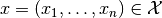

ComponentProjection¶
-
class
odl.operator.pspace_ops.ComponentProjection(*args, **kwargs)[source]¶ Bases:
odl.operator.operator.OperatorProjection onto the subspace identified by an index.
For a product space , the component projection
is given by for an element .
More generally, for an index set , the projection operator
 is defined by
.
is defined by
.Note that this is a special case of a product space operator where the “operator matrix” has only one row and contains only identity operators.
- Attributes
adjointThe adjoint operator.
domainSet of objects on which this operator can be evaluated.
indexIndex of the subspace.
inverseReturn the operator inverse.
is_functionalTrueif this operator’s range is aField.is_linearTrueif this operator is linear.rangeSet in which the result of an evaluation of this operator lies.
Methods
_call(self, x[, out])Project
xonto the subspace.derivative(self, point)Return the operator derivative at
point.norm(self[, estimate])Return the operator norm of this operator.
-
__init__(self, space, index)[source]¶ Initialize a new instance.
- Parameters
- space
ProductSpace Space to project from.
- indexint, slice, or list
Indices defining the subspace. If
indexis not an integer, theOperator.rangeof this operator is also aProductSpace.
- space
Examples
>>> r1 = odl.rn(1) >>> r2 = odl.rn(2) >>> r3 = odl.rn(3) >>> pspace = odl.ProductSpace(r1, r2, r3)
Projection on n-th component:
>>> proj = odl.ComponentProjection(pspace, 0) >>> x = [[1], ... [2, 3], ... [4, 5, 6]] >>> proj(x) rn(1).element([ 1.])
Projection on sub-space:
>>> proj = odl.ComponentProjection(pspace, [0, 2]) >>> proj(x) ProductSpace(rn(1), rn(3)).element([ [ 1.], [ 4., 5., 6.] ])